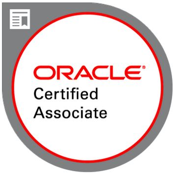

Anuroop Vijayaraj
Oracle Retail Consultant, Data Engineer · [ Qualification: BTech in IT ]
(Oracle Retail Predictive Analytics (RPAS),Database & Automation developer)
Oracle Consultant having 14 years of IT experience. Having 9 + years' experience in Oracle retail, mainly in Retail predictive solutions (RPAS) solutions- RDF/MFP/IP/SPO along with Retail Merchandising System (RMS). Also expertised in oracle database technologies (SQL, PLSQL,Oracle Data integrator). Strong Foundation & certified developer in Robotic Process automation ( RPA ) framework UiPath. Certified Oracle Associate in Oracle Cloud Infrastructure (OCI) Foundations 2020 & “Data Engineering with Hadoop & Spark” from EICT IIT Roorkee. Autonomous Database & oracle Apex Explorer. .
